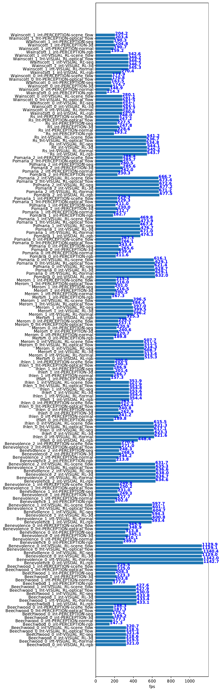

Quickstart
iGibson in Action
Assume you finished installation and assets downloading. Let’s get our hands dirty and see iGibson in action.
python -m igibson.examples.environments.env_nonint_example
If the execution fails with segfault 11, you may need to reduce texture scaling in the config file (igibson/configs/turtlebot_static_nav.yaml) to avoid out-of-memory error.
You should see something like this. If you are on Mac OS X, you will only see the two small windows.

The main window shows PyBullet visualization. The robot (TurtleBot) is moving around with random actions in a realistic house (called “Rs”, the one you just downloaded!).
On the right hand side, you can see two windows from our mesh renderer. The top one (RobotView) shows the robot’s first person view. The bottom one (ExternalView) shows the view of a virtual camera floating in the air.
If you want to have a virtual tour around the house yourself, you can click on the ExternalView window, and then translate the virtual camera to a different location by pressing “WASD” on your keyboard and rotate it to a different angle by dragging your mouse.
That’s it!
Using Docker and remote GUI access via VNC
If you go the docker route, please first pull our pre-built images (see the installation guide). After downloading, run docker images, and you should see igibson/igibson:latest and igibson/igibson-gui:latest.
On a headless server (such as a Google Cloud or AWS instance), run
cd iGibson
./docker/headless-gui/run.sh
# run a GUI example after the container command line prompt shows:
python simulator_example.py
On your local machine, you can use any VNC client to visit the remote GUI at <remote-ip>:5900 with the default password 112358.
For example, Mac OS X provides a native app called Screen Sharing that implements the VNC protocol.
To change the default port and password (must be 6 digits):
./docker/headless-gui/run.sh --vnc-port 5903 --vnc-password 654321
If you do not need GUI,
./docker/base/run.sh
# run a script after the container command line prompt shows:
python benchmark.py
Benchmarks
Performance is a big designing focus for iGibson. We provide a few scripts to benchmark the rendering and physics simulation framerate in iGibson.
Benchmark static scene (Gibson scenes)
python -m igibson.test.benchmark.benchmark_static_scene
You will see output similar to:
physics simulation + rendering rgb, resolution 512, render_to_tensor True: 421.12805140080695 fps
Rendering rgb, resolution 512, render_to_tensor True: 778.2959856272473 fps
Rendering 3d, resolution 512, render_to_tensor True: 857.2466839793148 fps
Rendering normal, resolution 512, render_to_tensor True: 878.6977946996199 fps
physics simulation + rendering rgb, resolution 512, render_to_tensor False: 205.68141718250024 fps
Rendering rgb, resolution 512, render_to_tensor False: 265.74379871537326 fps
Rendering 3d, resolution 512, render_to_tensor False: 292.0761459884919 fps
Rendering normal, resolution 512, render_to_tensor False: 265.70666134193806 fps
Benchmark physics simulation in interactive scenes (iGibson scene)
python -m igibson.test.benchmark.benchmark_interactive_scene
It will generate a report like below:

Benchmark rendering in interactive scenes
To run a comprehensive benchmark for all rendering in all iGibson scenes, you can excute the following command:
python -m igibson.test.benchmark.benchmark_interactive_scene_rendering
It benchmarks two use cases, one for training visual RL agents (low resolution, shadow mapping off), another one for training perception tasks, with highest quality of graphics possible.
'VISUAL_RL': MeshRendererSettings(enable_pbr=True, enable_shadow=False, msaa=False, optimized=True),
'PERCEPTION': MeshRendererSettings(env_texture_filename=hdr_texture,
env_texture_filename2=hdr_texture2,
env_texture_filename3=background_texture,
light_modulation_map_filename=light_modulation_map_filename,
enable_shadow=True, msaa=True,
light_dimming_factor=1.0,
optimized=True)
It will generate a report like below: 